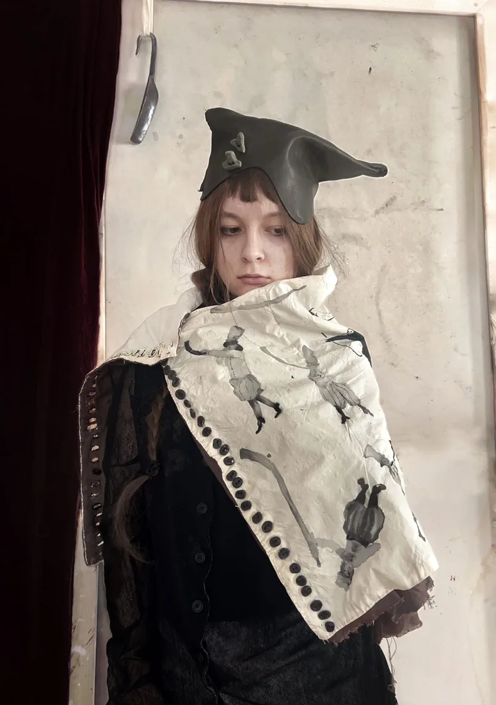

Textile Art
Lituus I — «Лігава»
2026 · Hand-sewn cape, hand-applied painting, hand-shaped buttons
Ligava — a traditional Ukrainian lip-reed wind instrument from Polissia, historically used by shepherds for signalling. Painted in grey wash across the cape: a figure raising the horn to play it, and processions of small figures in tall hats. The buttonholes are worked by hand and coated with a rigid material.
Send an enquiry